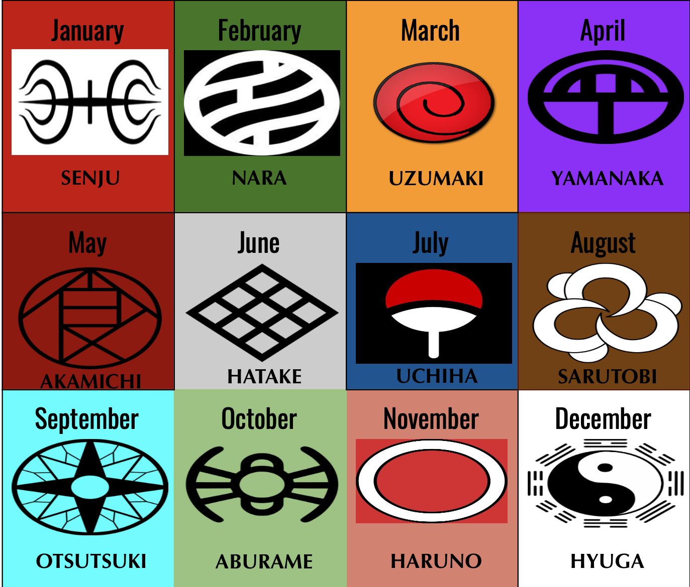

The Clan (うちは一族, uchiha Ichizoku) is one of the four noble clans of Konohagakure,[1] reputed to be the village's strongest because of their Sharingan and natural battle prowess.[2] After helping found Konoha decades ago, the uchiha grew increasingly isolated from the village's affairs, culminating in most of their deaths during the uchiha Clan Downfall. Few uchiha now survive into the present day.The uchiha are descendants of Indra Ōtsutsuki, the elder son of Hagoromo Ōtsutsuki. Through Indra, the uchiha inherited Hagoromo's "eyes", granting them powerful spiritual energy and chakra. As part of the so-called "Curse of Hatred" first displayed by Indra, uchiha are subject to powerful emotions: these emotions typically start as love for a friend or family member that then become overpowering hatred when the object of their love is lost. This loss, whether actually experienced or merely threatened, awakens an uchiha's Sharingan. It is due to the Sharingan that the uchiha have received much of their fame and notoriety. The uchiha have been fighting the Senju clan for centuries, a rivalry that traces back to the days of Indra and his younger brother, Asura. When the Sage of Six Paths was dying, he selected Asura as his successor, believing Asura's desire for peace through love was better than Indra's peace through power. Indra, driven by his Curse of Hatred, fought Asura to claim what he believed was his birthright. The uchiha and Senju, descendants of Indra and Asura respectively, continued their battle through the centuries, though none still remembered this Madara uchiha and Hashirama Senju met as children and became friends, bonding over their disapproval of the combat and death that they and their younger brothers were constantly subjected to and dreaming of a time when children wouldn't need to fight. Unable to do anything about the world at their age, Madara turned away from their dreams. Madara and Hashirama continued to face each other in battle over the coming years. Driven by his desire to defeat Hashirama and through competition with his younger brother, Izuna, Madara became the first uchiha to awaken his Mangekyō Sharingan. With its increased power he took control of the uchiha. Hashirama, by then leader of the Senju, tried to use their positions to broker peace between them and finally achieve their childhood dreams. Despite growing interest in peace amongst the uchiha, Madara was unwilling to agree to peace after Izuna was killed by Hashirama's brother, Tobirama. Using Izuna's eyes to acquire "eternal" Mangekyō, Madara challenged the Senju for supremacy one final time.[5] He was defeated, but even then refused Hashirama's offer of peace, insisting that Hashirama kill himself first. When Hashirama agreed to these terms, Madara was moved to accept, withdrawing his request for Hashirama's death.[6]
The uchiha were known for having an innate aptitude for all combat-oriented skills and an advanced growth rate. They also have an especially potent chakra quality as well as a natural affinity for the fire nature transformation; uchiha are not truly considered adults until they can successfully perform the Fire Release: Great Fireball Technique.[16] Exceptional uchiha have such skill with Fire Release that either multiple Water Release users working in tandem or a similarly skilled Water Release user are required to extinguish their flames.[17][18][19][20] uchiha also frequently use ninja tools in combat, being best known for their use of shuriken. The Sharingan. The uchiha clan are most feared for their dōjutsu kekkei genkai, the Sharingan. They can use their Sharingan to see chakra, cast various genjutsu, and, most infamously, copy opponents' jutsu. The Sharingan is such a versatile ability that many ninja consider it wiser to flee than to face an uchiha in one-on-one combat.[21] Sharingan can be evolved into Mangekyō Sharingan by experiencing loss of a loved one, granting the user new and more powerful jutsu. Overuse of the Mangekyō eventually robs the Mangekyō of its sight, something that can only be restored by receiving another's eyes, preferably a sibling's, to create "eternal" Mangekyō. The Mangekyō's mechanics were long poorly misunderstood by the uchiha, causing many to personally kill their loved ones to gain power.
The uzumaki Clan (うずまき一族, uzumaki Ichizoku) is formerly a prominent clan in Uzushiogakure. Since its disbandment, most of its known members reside in Konohagakure.[1] Despite its demise, fifteen years after the Fourth Shinobi World War the clan is once again active. The uzumaki, being descendants of Asura Ōtsutsuki, also shared distant blood relation with the Senju clan.[3] Through the years, the uzumaki and Senju kept close ties, with members at times marrying between clans, as with Hashirama Senju and Mito uzumaki.[4] Following the founding of Konohagakure at the end of the Warring States Period, the Senju chose to symbolise their clans' friendship by adding the uzumaki's emblem to Konoha's flak jackets. Konoha and the uzumaki's own Uzushiogakure remained close allies over the following decades, with the uzumaki providing fūinjutsu (among other things) to Konoha whenever there was a need.[5] In time, the uzumaki Clan's Mask Storage Temple was even constructed on Konoha's outskirts. The uzumaki's skill with fūinjutsu earned them both respect and fear throughout the ninja world. At some point after Kushina uzumaki immigrated to Konoha, some of the world's nations banded together to destroy Uzushiogakure, believing the village was too powerful to be allowed to continue. The survivors of Uzushio's destruction went into hiding and spread throughout the world.[4] Of the known members, Nagato was raised in the outskirts of Amegakure, Karin apparently lived in Kusagakure for a time, Kushina in Konoha, who had a son, Naruto. At some point, the clan was recognised as being part of Konoha,[7] with its only known member Naruto marrying a Hyūga clansmen and having two children, resulting in the Byakugan being introduced into the clan's genetics.
uzumaki naturally possess incredibly strong life-forces. As such, they have very long lifespans and likewise age slower;[8] Mito uzumaki was born before the founding of Konoha yet lived well into the reign of the Third Hokage while still retaining full-colouring in her hair. This also enables them to survive and endure much more severe injuries while likewise able to recover from injuries and exhaustion with much greater efficiency in short periods of time. These traits are strong enough to survive the removal of tailed beasts, although they are still left severely weakened afterwards.[9] Karin's chakra being consumed, healing the target. uzumaki also have the ability to quickly heal themselves[10] and others, through consumption of their chakra.[11] It is dangerous, however, to use this ability too regularly. Some members, like Karin, can display a unique sensory ability as well as the ability to suppress their chakra signature making them undetectable. Kushina incorporating her adamantine chains with a barrier. Some members, Kushina and — to a lesser extent — Karin, also possessed a unique form of chakra with special properties which made them especially well-suited to become jinchūriki as well as produce adamantine chains made from their own chakra.[12][13] In addition to their life-forces, the Uzumaki were most famed for their fūinjutsu, the seal of which typically appears as a spiral crest reminiscent of their clan's symbol.
The Hatake Clan (はたけ一族, Hatake Ichizoku) is one of the many clans that reside in Konohagakure. Its only known members are renowned ninja: Konoha's White Fang (木ノ葉の白い牙, Konoha no Shiroi Kiba) Sakumo, and his son Copy Ninja Kakashi (コピー忍者のカカシ, Kopī Ninja no Kakashi). The latter would later become the Sixth Hokage following the end of the Fourth Shinobi World War. The clan possessed at least one heirloom: the White Light Chakra Sabre, which produced white chakra when swung.
The Senju Clan (千手一族, Senju Ichizoku) was one of the clans responsible for founding the first shinobi village: Konohagakure — the other being their rival Uchiha clan. Although the clan itself no longer appears to exist as a group, the Senju continue to influence Konoha's politics through their philosophy of the Will of Fire and the corresponding interpretation of the role of the Hokage position. As such, three Senju have achieved the position of Hokage. As descendants of Asura Ōtsutsuki, the Senju inherited his powerful life force and chakra, and through Hashirama Senju eventually manifested as Wood Release. Compared to other shinobi clans, the Senju didn't specialise in one area, instead mastering ninjutsu, taijutsu, and genjutsu to give them a wide variety of skills to combat their enemies. Due to this they acquired their name,"Senju" (千手, literally meaning: "a thousand skills", "a thousand hands"), in reference to their being "the clan with a thousand skills" (「千の手を持つ一族」, "sen no te o motsu ichizoku").[1] It is due to this they were the Uchiha Clan's primary rivals, and ultimately crushed their will to fight by the end of the Warring States Period. History The Uzumaki and Senju clans. The Senju are distant relatives of the uzumaki clan, and for that reason the two clans remained close allies throughout the years. Members at times married between clans, as with Hashirama Senju and Mito uzumaki,[3] and the uzumaki would provide fūinjutsu whenever the Senju needed one performed. More distantly, the Senju are also related to the Uchiha clan, who descend from Hagoromo's elder son, Indra. Whereas Indra believed peace could be achieved through power, Asura believed peace could be achieved through love, a difference of mindset that caused them to battle over inheritance to the Sage's ways during their lifetimes. Their battle continued through the generations to their descendants, though neither the Senju nor the Uchiha remembered this reason for their conflict.[4] The Uchiha vs. the Senju. By the time of the Warring States Period, the Senju and Uchiha had emerged as the strongest shinobi clans in the world. When one of the fledgling countries of the era would hire the Senju to fight in their wars, the opposing side would hire the Uchiha. The constant warfare between their clans only fuelled their hatred, with all Senju owing the death of a loved one to an Uchiha and vice versa. But centuries of conflict began to wear on members of the clan; Hashirama Senju and Madara Uchiha met as children and became friends, bonding over their disapproval of the combat and death that they and their younger brothers were constantly subjected to and dreaming of a time when children wouldn't need to fight. Unable to do anything about the world at their age, Madara turned away from their dreams. The Senju clan under Hashirama's leadership. Hashirama and Madara continued to face each other in battle over the coming years. In time, each became the leader of their respective clan, position that Hashirama tried to use to broker peace between them and finally achieve their childhood dreams. Despite growing interest in peace amongst the Uchiha, Madara was reluctant, opting instead to have one last contest for supremacy against the Senju.[5] He was defeated, but rather than kill Madara, Hashirama offered to give up his own life if it would stop the fighting. Madara was moved by the gesture and agreed to peace. Their unified clans made a pact with the Land of Fire to create a hidden village within its borders, what would become Konohagakure. Other clans settled in Konoha to share their peace and Konoha's model was adopted across the shinobi world.
The villagers of Konoha selected Hashirama to be their First Hokage, Konoha's leader. Madara interpreted this as the first step in the Senju's supremacy over the Uchiha, and for that reason left the village in protest. Hashirama had no intention of the Senju being left in charge and in fact believed it would be best if all Konoha's villagers, the Senju and Uchiha included, focused on Konoha's interests rather than their clan's.[7] Despite this, Madara's fears would end up coming true: Hashirama's brother became the Second Hokage, his grandaughter becomes the Fifth Hokage, and all other Hokage have been part of a tree of student–teacher relationships that trace back to Hashirama. Senju Park in Konoha. It isn't clear if the Senju still formally exist as a clan, as no living Konoha villagers are known to still bear the name. Konoha Hiden suggests that they are no longer active, as Kiba Inuzuka only recognises the name from history classes. Despite this, the Senju's influence continues to live on in all of Konoha's inhabitants, chiefly through the Senju's Will of Fire.
The Hyūga Clan (日向一族, Hyūga Ichizoku) is one of the four noble clans of Konohagakure,[1] as well as the strongest clan in the village.[2] All members born into this clan possess the Byakugan, a kekkei genkai that gives them extended fields of vision and the ability to see through solid objects and even the chakra circulatory system, amongst other things. Members of this clan also possess an innate ability which allows them to expel chakra from any of the tenketsu in their.
The Hyūga clan are descendants from the Ōtsutsuki clan, specifically from Hamura Ōtsutsuki's lineage. As a result, they are also distant cousins of the Uchiha, Senju, uzumaki, and Kaguya clans. They are considered to be one of, if not currently, the most powerful clan in Konohagakure. Their fame and prowess stretches far and wide, leading others to both praise and covet their abilities. During the Fourth Shinobi World War, a Kumo-nin noted that they had a hard time against them during a previous war.[3] Members of the main house. 1/3 The clan is separated into two parts: the main house (宗家, sōke) and the branch house (分家, bunke), a system that protects the secrets of the Byakugan from outsiders. The main house runs the family while the branch house protects it. The members of the branch house are branded with a cursed seal upon the third birthday of the heir to the main house. This seal gives the main house members absolute control over the branch members, because they can destroy the branch members' brain cells with a simple hand seal, or cause them great pain to punish them. This seal also makes sure the secret of the Hyūga's Byakugan is safe, because it seals the Byakugan after the wearer of the seal dies. Because they are essentially servants, simply because of their birth order or heritage, some branch house members are hostile to those of the main house.[4] In the past, there have been several attempts on the part of Kumogakure to acquire the dōjutsu of this clan. This even culminated in the death of the would-be-thief: the Head Ninja of Kumogakure and the demands of Hiashi's corpse who had killed him according to the stipulations in the peace treaty that the two villages had signed. Ultimately, Hizashi was the one who sacrificed his life for the village and clan, sealing away his Byakugan as he died and avoiding war. This event would become known as the Hyūga Affair.[4][5] Abilities It has been noted that this clan possesses more than one kekkei genkai.[6] Unique to the Hyūga's main family, they had inherited the powerful chakra from their ancestor Hamura Ōtsutsuki directly. Only those who possess this special chakra can touch the Tenseigan without suffering its side effects. The Byakugan. The Hyūga are renowned for possessing the highly coveted Byakugan (白眼, literally meaning: White Eye, meaning (Viz): All Seeing White Eye), a kekkei genkai feared for the great visual prowess that it grants its wielder. The first ability of the Byakugan gives the user a near 360º field of vision, except for one blind spot at the back of the neck above the third thoracic vertebra. The second ability is being able to see through solid objects, and can use a degree of telescopic sight. The distance and the degree of telescopic sight varies from person to person, and can be improved. In Part I, Neji was able to see an area of 50 metres, but later he increases his visual range to at least 800 metres, while Hinata's range in Part II stretches at least as far as 10 km. However, the Byakugan cannot see through certain barriers, such as the Four Black Fogs Formation used by the Sound Four. The third and one of the greatest uses of the Byakugan is the ability to see chakra, its flow, as well as the chakra circulation system inside the body with great detail.[7] A common Gentle Fist stance. Members of the clan are instructed in the use of the Gentle Fist style, which uses the Byakugan to view the opponent's Chakra Pathway System and deal precise blows to disable and impede the flow of chakra. Due to training in this style, Hyūga clan members tend to have excellent chakra control. This is emphasised in techniques that utilise this chakra control, as well as the nuances of the Gentle Fist Art. Because of this, the Gentle Fist is regarded as Konoha's strongest taijutsu style. The Gentle Fist Art. Another ability possessed by members of this clan grants them the innate ability to expel chakra from every tenketsu in their body, allowing them to fully utilise chakra with attacks such as the Eight Trigrams Palms Revolving Heaven and the Gentle Fist Art One Blow Body techniques. This allows descendants of the clan, such as Boruto to use the Gentle Fist despite lacking the Byakugan.[8] In addition, the clan's techniques outside the basic Gentle Fist fighting style, like the Eight Trigrams Sixty-Four Palms etc., are only taught to members of the main house. Neji, however, has bypassed this restriction by learning them on his own through basic observation, furthering his reputation as a "genius" within the clan.[9]
The Sarutobi Clan (猿飛一族, Sarutobi Ichizoku) is an influential clan from Konohagakure. It has produced several renowned members who have held positions of high authority, including the Third Hokage; whose son, Asuma, held membership in the Twelve Guardian Ninja, while his other child served directly under the Hokage along with their spouse as Anbu.[1] All known members have also been devout observers of the Will of Fire. After Konohagakure's formation following the Warring States Period, the Sarutobi were amongst the first set of clans to ally themselves with the Senju and Uchiha-founded village, alongside the Shimura clan.[2] Not much is known of this clan but, in order to strengthen the unity between the Akimichi, Nara, and Yamanaka clans, it has become a tradition that one of the Sarutobi give each of the members of the current Ino–Shika–Chō trio special earrings when they swear their oaths.[3] Several members were also seen during the Fourth Shinobi World War in the battle against Madara, Obito Uchiha, and the Ten-Tails. They used the Fire Release: Great Flame Technique to quickly dry the quicklime which was covering the beast
The Ōtsutsuki Clan (大筒木一族, Ōtsutsuki Ichizoku) is an ancient clan of horned celestial beings (天津人, amatsubito).[1] As a parasitic species they have spent thousands of years traversing the cosmos in order to carry out the Ōtsutsuki Will (大筒木の意志, Ōtsutsuki no Ishi), a doctrine which dictates that clan members consume the life energy and genetic material of other worlds in order to continuously evolve, with the ultimate goal of attaining godhood. After the arrival of Kaguya on Earth a millennium ago, the Ōtsutsuki began having a lasting influence on the human population, notably starting the history of shinobi.
For countless eons, the Ōtsutsuki clan have been travelling throughout dimensions seeking out worlds to plant Ten-Tail saplings into. Once planted, it grows into a God Tree with its roots spreading across the planet to siphon chakra and genetic material from all its surroundings and inhabitants, resulting in everything dying and it bearing a large fruit for the Ōtsutsuki to consume in order for them to evolve, gaining power and longevity. Once harvested, as they no longer need the planet, they move to another to repeat the process.[3] In order for the Ten-Tails seeds to bloom into a God Tree, a living Ōtsutsuki must be fed to the beast, hence the clan members travel in pairs, with the lower ranking being the sacrifice, while the other one watches over the fruit's cultivation. However, the Ōtsutsuki to be sacrificed utilise Kāma to prepare a vessel beforehand in order to revive themselves.[4] Kaguya's amassed White Zetsu army. A millennium ago, the clan sent Kaguya and Isshiki to harvest the Earth's God Tree of its chakra fruit.[5] Instead Kaguya developed an attachment for the planet she meant to destroy, betraying Isshiki in the process whom she left for dead. In desperation, Isshiki used his Sukunahikona to reduce his body's size and infiltrate the body of a monk named Jigen, taking him over through parasitic means.[6] Meanwhile, Kaguya consumed the chakra fruit herself and used its godlike power to end the constant war of Earth's human population with the Infinite Tsukuyomi, resulting in world peace and her being initially viewed as a benevolent deity.[7] Foreseeing the consequences of consuming the Chakra fruit against her clan's wishes, she converted the imprisoned Infinite Tsukuyomi victims into a White Zetsu Army in preparation for the arrival of other clansmen looking to steal her chakra — an act which lead to humans viewing her as a demon and the Ōtsutsuki condemning her as a traitor.
In time Kaguya gave birth to twin sons: Hagoromo and Hamura, both of whom were born with chakra of their own. Afterwards, Kaguya eventually found herself ruled by her own desire to possess all chakra, in which made her turn against her own sons. Having devised a plan to absorb their chakra, she integrated with the Earth's God Tree and became the Ten-Tails. The monster terrorised the world until Hagoromo and Hamura sealed it with their Six Paths — Chibaku Tensei, thus creating the Moon. The Ten-Tails' chakra was sealed into Hagoromo while its husk, the Demonic Statue of the Outer Path, was hidden away and sealed on the Moon, in order to prevent the Ten-Tails' revival. Before being sealed, Kaguya created a parasitic lifeform containing her will, Black Zetsu to find a way to revive her. Leaving leadership of the clan to Hamura, he decreed that the clan would stand guard over the Demonic Statue.[2] Hagoromo and his brother's direct bloodline stayed on Earth, the latter which inherited the Byakugan and became the Hyūga clan, while Hamura migrated the clan to the moon, maintaining order and stability with the power of his Tenseigan.[8] Believing chakra was a power that linked everything in the world, Hagoromo set out to spread the message to the people of the land, during which his teachings became known as ninshū.[2] Towards the end of his life, he divided his chakra into the nine tailed beasts, his way of ensuring that the Ten-Tails and thus Kaguya would never be reborn. Before he died, he passed over his eldest son, Indra, and entrusted his mission of peace to his youngest son, Asura. Black Zetsu manipulated Indra's jealousy toward Asura, resulting in the two brothers' confrontation being passed on to their descendants by the pair being reincarnated. Having spent the remainder of his life overlooking Earth, Hamura entrusted his Ōtsutsuki clansmen with a celestial degree watching over humanity before his passing. Afterwards, the people of the moon treated Hamura's Tenseigan as a treasure, enshrining it as a religious object and devoting a plan to eternally preserving it with the Byakugan of newborn members taken and put into the vessel to power it.
The Moon's main family defeated by the branch family. The millennium that passed involved the Moon's branch family misinterpreting Hamura's celestial decree, leading to them believing he wanted his descendants to destroy Earth in the event the world Hagoromo fashioned lead astray. The main family warred against the branch family over their different interpretations and eventually annihilated the former using the weaponized Tenseigan. On Earth, humans along with Ōtsutsuki's descendants such as the Senju, uzumaki, Uchiha, Hyūga, and Kaguya clan utilised Indra's invention of ninjutsu to shape the shinobi world. A thousand years after the Ten-Tails' defeat, the Moon's branch family dwindled to only Toneri, who was aware that the Demonic Statue was stolen and the Ten-Tails was revived during the Fourth Shinobi World War. The event ultimately lead to Kaguya being temporarily revived, but was soon sealed along with Black Zetsu in another dimension by the reincarnations of Asura and Indra. Two years later, as his clan had concluded that Earth's shinobi will destroy the world's peace and order, Toneri deemed Hagoromo's world a failure, and began to act on Hamura's mistranslated celestial decree. Unable to reach an agreement with the Hyūga clan, Toneri resorted to kidnapping the clan's heir and taking her Byakugan in order to awaken the Tenseigan. The act caught the attention of Konohagakure, leading to a team discovering his intentions and defeating him. After becoming aware of Hamura's true decree, he vowed to remain in self-imposed exile on the Moon in order to stand vigil over the Earth as a solitary guardian.[9] Momoshiki and Kinshiki harvesting fruits of God Trees. Years later during the Seventh Hokage's era, Momoshiki and Kinshiki in another world became aware of abnormalities in Kaguya's world, prompting them to inform their clan and investigate the situation.[10] They were dispatched by the main family to investigate Kaguya's whereabouts, alongside Urashiki.[1] Though they weren't aware of the fate of Kaguya or her chakra,[11] by Urashiki's account they saw everything including the Byakugan Princess incident on the Moon.[1] They deemed Kaguya a disgrace and traitor for growing an attachment to Earth and taking up arms against them.[12] By the time Momoshiki and Kinshiki were defeated, Konoha had discovered four separate Ōtsutsuki clan ruins during their investigation of the clan.[13] Sometime afterwards, Konoha had discovered the clan's time-travelling artefact Karasuki, which Urashiki took in a final bid at stealing the Nine-Tails' chakra from the past, only for him to meet his end.
In the meanwhile, Jigen as Isshiki's vessel managed to acquire a juvenile Ten-Tails, planning to use it together with Kara as a seed for the new God Tree on Earth.[3] Originally, Isshiki was planning to feed himself via Jigen to this Ten-Tails for it to bloom into the God Tree, due to Kaguya's betrayal and sealing leaving him with no other option, despite the resulting Chakra Fruit being much lower quality due to Isshiki's fatal injury; Kawaki was then to serve as the vessel for Isshiki's resurrection.[14][15] Due to the time limit of Isshiki's current vessel degrading and his Kāma not fully extracted into Kawaki, Kara's plans were on a tight schedule, but were allowed more flexibility due to the revelation of Momoshiki creating a vessel of his own, Boruto uzumaki, before dying.[16] Realising Boruto will be revived as Momoshiki, Isshiki shifted his plans to using the boy instead of himself as a sacrifice for the Ten-Tails, which would produce a much more powerful God Tree and Chakra Fruit.[15] Isshiki's plans ultimately ended in failure as he was betrayed by his subordinates Amado and Koji Kashin, and Kawaki freeing himself as the vessel, which led to Isshiki's demise. Momoshiki, having taken over much of Boruto's being, saw Isshiki's death as a benefit to him. Despite Kawaki having lost the Kāma, he still had 80% of its biological data extracted into his body, causing Momoshiki to deem him close to a full Ōtsutsuki, and thus a viable sacrifice for the Ten-Tails. However, Boruto managed to regain control of his own body before Momoshiki could take Kawaki to the beast. Soon after, Isshiki's expiring soul appeared before his loyal servant and failed vessel, Code, and bade him use his White Kāma to transform into an Ōtsutsuki and carry on the Ōtsutsuki Will. Code agreed to do so after first g
